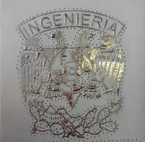

Un poco de mi...
Yessica Lourdes Guzmán González, Ciudad de Mexico. Estudiante de la carrera de Ingenieía en la Facultad de Ingeniería de la UNAM. Nací en la Ciudad de México. Soy la menor de 4 hijos, 3 mujeres y 1 hombre. Soy mamá de una maravillosa niña, tiene 6 años y su nombre es Fátima Andrea. Mi papás han dedicado toda su vida a la repostería y pastelería por lo que crecí en este rugro y la mayoria de mi familía son pasteleros, yo decidí darle un giro a mi profesión.

